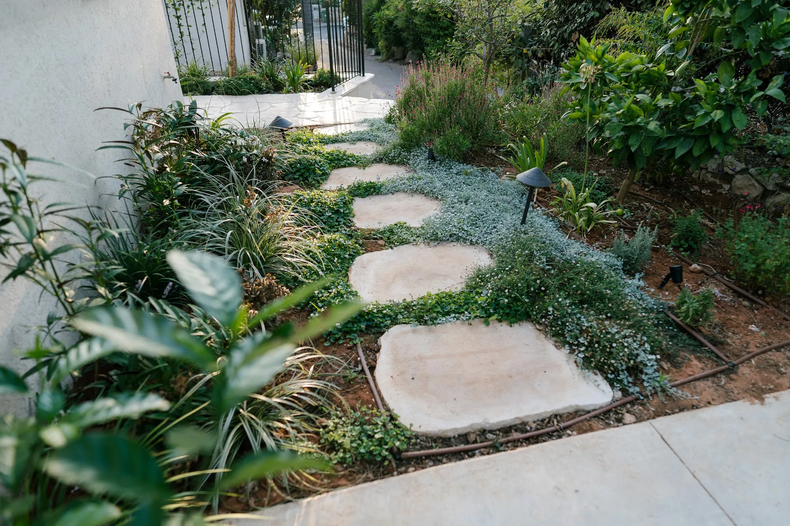
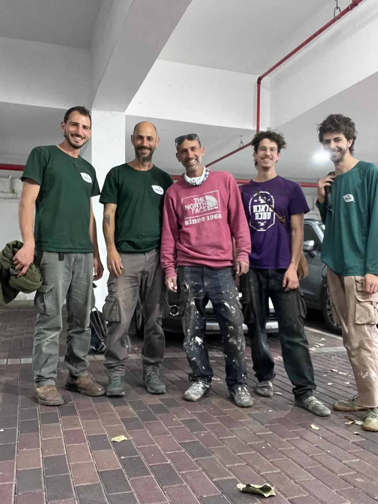
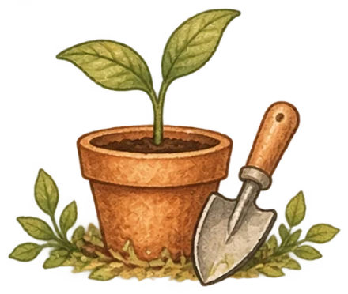
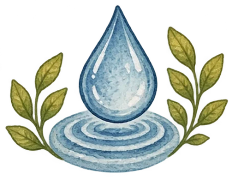
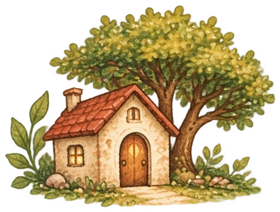
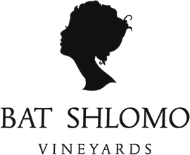
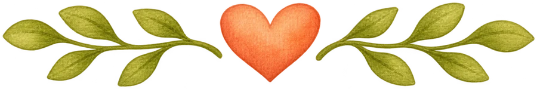

מייסד נוף וחורש, מתכנן ומקים גינות
איתי שסטצקי
גנן אקולוגי ומנחה קבוצות בהכשרתו. מרצה, מלמד, מייעץ ומנחה לקיימות מעשית לקבוצות, ארגונים ויחידים, מנהל מקצועי עמותת ונטעת.
לשעבר רכז מרחבים אקולוגיים ותכנית אקו-ישראל ב"חווה ואדם".
לשירותים
נוף וחורש הוא העסק של איתי שסטצקי: גנן, איש פרמקלצ׳ר ומנחה, שמתכנן, מקים ומטפח גינות ים־תיכוניות בכל הארץ.
ארבעה דברים שחוזרים בכל גינה שאנחנו מקימים.
התבוננות. לפני שבוחרים צמח, מסתכלים: אור, רוח, מים, שכנים, והאנשים שגרים בבית.
צמחייה מקומית. חרוב, אלה, מרווה, קורנית. צמחים שמכירים את הקיץ היבש ואת הגשם של החורף.
אדמה חיה. קומפוסט, הומוס וחיפוי. אדמה בריאה היא הגינה עצמה, לא רק מה שגדל עליה.
סבלנות. לגיטימי לחיות בבית עונה אחת לפני שמחליטים על הכול. גינה טובה נבנית בקצב שלה.
לגינות שהקמנו
מייסד נוף וחורש, מתכנן ומקים גינות
גנן אקולוגי ומנחה קבוצות בהכשרתו. מרצה, מלמד, מייעץ ומנחה לקיימות מעשית לקבוצות, ארגונים ויחידים, מנהל מקצועי עמותת ונטעת.
לשעבר רכז מרחבים אקולוגיים ותכנית אקו-ישראל ב"חווה ואדם".
לשירותים
צוות הביצוע
צוות צעיר של גננים, אגרונומים ואדריכלי נוף שמגיעים מהשטח, שאכפת לו מכל צמח ומכל לקוח, ושמחובר לטבע של המקום. מי שבא לעבוד אצלכם בחצר הוא מי שתכנן אותה איתכם.
צוות נוף וחורש מבצע עבודות תשתית, השקיה, הכנת קרקע, שתילה ופיתוח.
איך אנחנו עובדים
הכשרה מקצועית וניסיון מעשי בשטח
בתכנון, הקמה, שיקום ותחזוקה

חשיבה מערכתית על צמחייה, מים וקרקע

פרויקטים בכל קנה מידה





זה תלוי בגודל השטח, בחומרים ובמה שכבר קיים בחצר. בפגישת ההיכרות נדבר על טווח תקציב, ואחרי תכנון האלמנטים תקבלו הצעת מחיר מפורטת, סעיף אחרי סעיף.
מהפגישה הראשונה ועד שתילה עוברים בדרך כלל כמה שבועות של תכנון, וההקמה עצמה תלויה בהיקף. העונה הכי טובה לשתילה היא הסתיו, עם הגשם הראשון.
לא. אפשר להתחיל בתשתיות, בהשקיה ובעצים, ולהשאיר את השאר לעונה הבאה. לפעמים זה אפילו עדיף.
צמחייה מקומית מכירה את הקיץ היבש שלנו. אחרי שהיא מתבססת, בשנה־שנתיים הראשונות, היא צריכה הרבה פחות השקיה מגינה רגילה.
אפשר להמשיך איתנו בתחזוקה קבועה, לרוב אחת לשבועיים, או לקבל מאיתנו הדרכה ולטפל בה בעצמכם.
כן. קורה שמתכנן אחר מתכנן ואנחנו מקימים, או שאנחנו מקימים חלק מהגינה לצד בעל מקצוע אחר.
בכל הארץ. הבסיס שלנו בבת שלמה, בכרמל.

ספרו לנו מה יש לכם היום, חצר, מרפסת או רצועה בכניסה, ומה הייתם רוצים שיהיה שם.
לתיאום פגישת היכרות